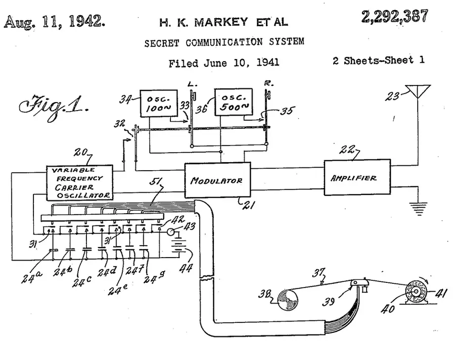
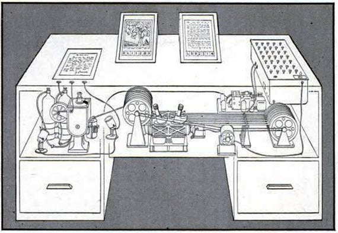
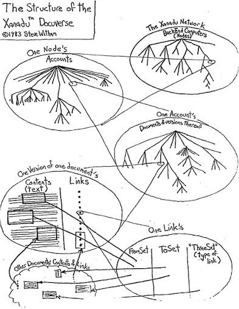
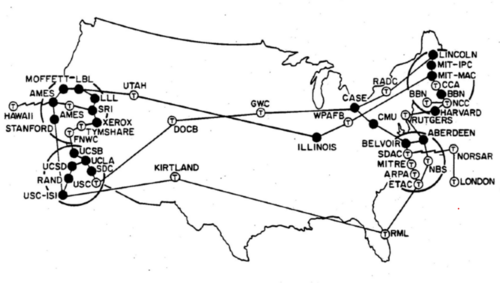
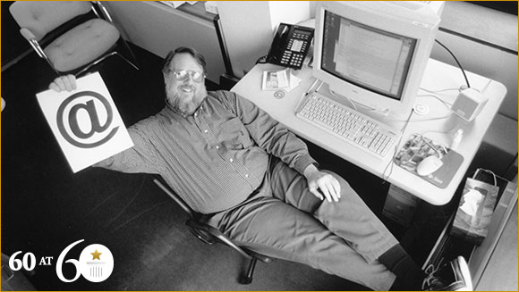
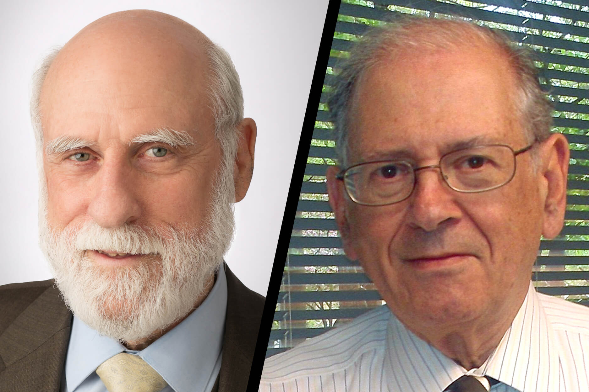
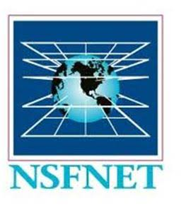
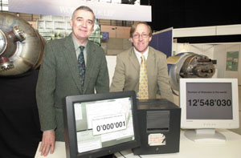
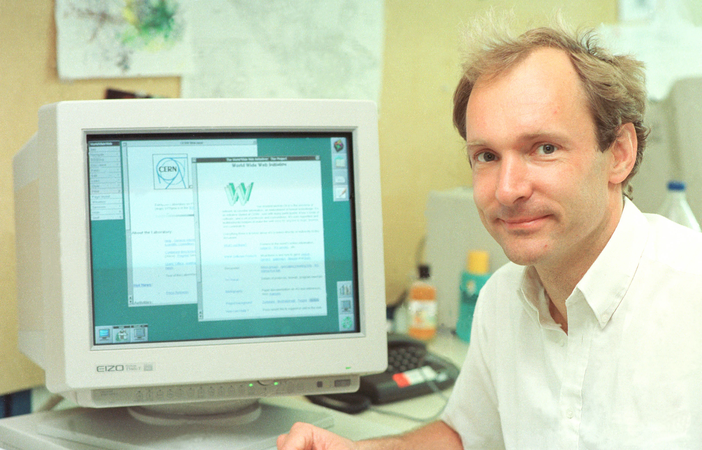
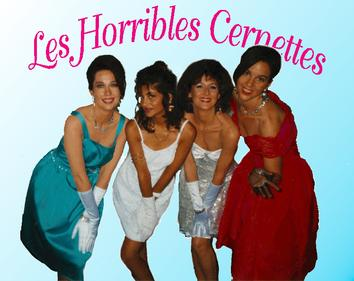

WEB HISTORY
Milestones

1910
Belgian information activists Paul Otlet and Henri La Fontaine founded The Mundaneum, an early system for organizing and connecting large amounts of information.

1942
Hedy Lamarr and George Antheil created a frequency-hopping communication system that later influenced technologies used in wireless communication.

1945
Vannevar Bush's article "As We May Think" described his Memex, a theoretical device that could store information and connect ideas through linked trails.

1960s
Ted Nelson developed Project Xanadu and popularized the idea of hypertext, allowing information to be connected through links.

1960s
ARPANET connected computers at research institutions and became one of the earliest networks that helped lead to the modern Internet.

1971
Ray Tomlinson sent the first network email and introduced the @ symbol to separate a user's name from the computer hosting the account.

1983
Vint Cerf and Robert Kahn helped develop TCP/IP, communication standards that allow different computer networks to connect and exchange information.

1983
Management of much of the growing network shifted from the Department of Defense toward the National Science Foundation, helping expand civilian access to computer networking.

1989
Tim Berners-Lee and Robert Cailliau worked at CERN on the World Wide Web, a system for accessing and connecting documents across computers on the Internet.

1990
Tim Berners-Lee developed major foundations of the web, including HTML, HTTP, URLs, and an early web browser, making it possible to create and access pages on the World Wide Web.

1990
Alan Emtage created Archie, the first Internet search engine, which allowed users to search indexes of files stored online.

1991
Tim Berners-Lee published the first website, which explained the World Wide Web project and showed people how to access and create web pages.

1992
A photograph of the band Les Horribles Cernettes became one of the first photographs published on the World Wide Web at CERN.